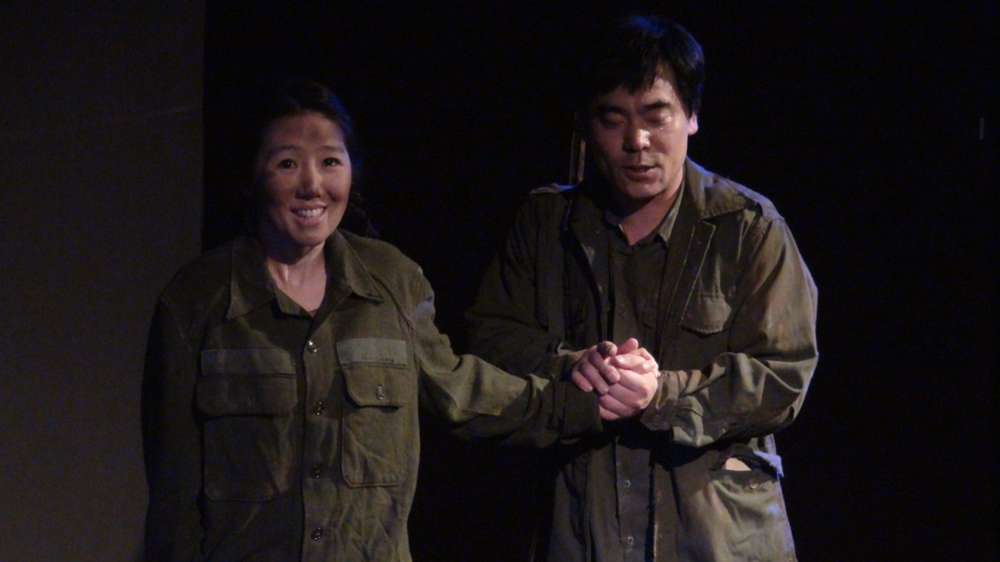
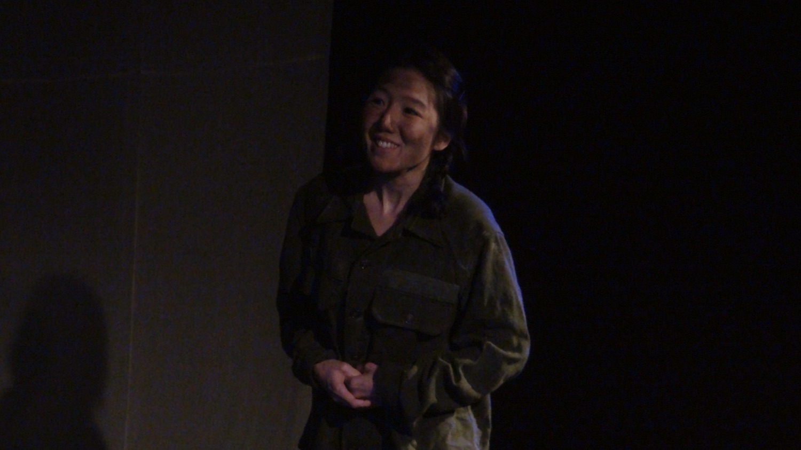
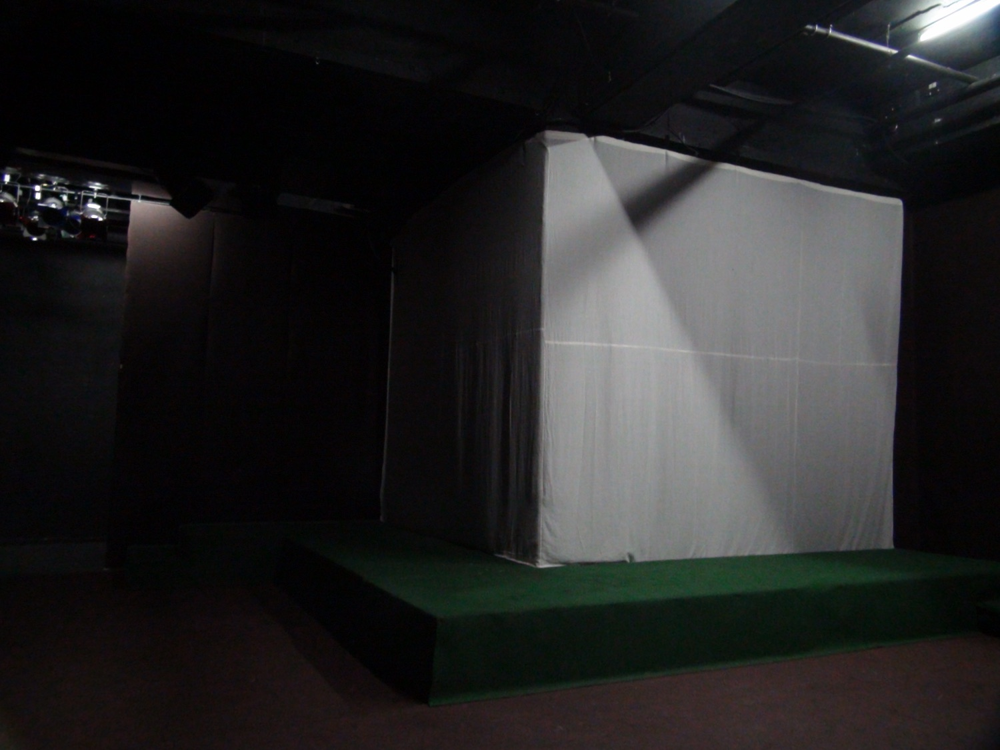
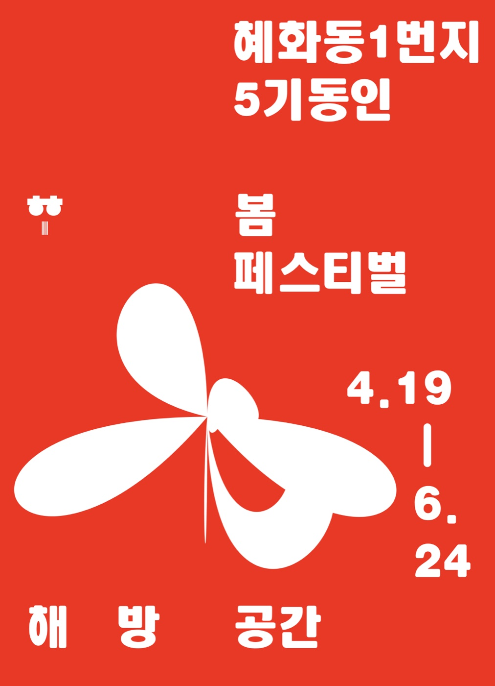

Performance — 2012
Butterfly,
66 Years of Silence호접, 66년의 침묵 · 극단 거미
해방 직후 남과 북에서 공연되고, 그 뒤 66년 동안 침묵해야 했던 희곡 — 김사량의 《호접》을 다시 무대에 올리다.
Performed in both South and North just after liberation, then silenced for sixty-six years — Kim Sa-ryang’s Butterfly returns to the stage.
김사량은 중국으로 망명하여 항일한 문학가입니다. 그의 희곡 《호접》은 해방 직후 남과 북에서 출판·공연되었고 해방 1주년 기념(1946) 희곡집에 수록되었지만, 이후 북에서는 정치적 문제로 잊힌 작품이 되었고 남에서는 1970년대까지 김사량의 책을 소지하는 것 자체가 간첩행위로 여겨져 그의 작품 역시 사라졌습니다. 60년 가까이 묻혀야 했던 이 희곡의 운명은, 분단 이후의 냉전이 우리의 의식을 얼마나 억압했는지 보여주는 단적인 예입니다.
《호접》은 1941년 12월 화북 호가장 전투를 배경으로 한 3막 4장의 작품입니다. 일본군 점령지 경계의 마을에서 선전활동을 마치고 쉬던 조선의용군 30여 명이 새벽에 일본군 600여 명의 기습을 받고, 항전 끝에 포위를 뚫습니다. 김사량은 1945년 북경을 탈출해 연안으로 가는 길에 이 전투의 이야기를 전해 듣고 기행문 《노마만리》에 기록했으며, 그 많은 부분이 《호접》이 되었습니다. 유형화되지 않은 인물들의 개성 속에서, 조선의용군의 삶이 단지 나라를 되찾는 일이 아니라 한층 나은 인간성의 실현과 그로 인한 해방임을 보여주는 작품입니다.
Kim Sa-ryang was a writer who went into exile in China to resist Japanese rule. His play Butterfly was published and performed in both Koreas immediately after liberation and included in the first-anniversary anthology of 1946 — then forgotten in the North for political reasons, while in the South, into the 1970s, merely possessing his books counted as espionage. The play’s near-sixty-year burial is a stark measure of how deeply Cold War division suppressed our consciousness. Set at the Battle of Hujiazhuang in December 1941, the play follows some thirty soldiers of the Korean Volunteer Army ambushed at dawn by six hundred Japanese troops. Kim heard the story while escaping Beijing for Yan’an in 1945 and recorded it in his travelogue Noma Malli, much of which became Butterfly — a work showing that the volunteers’ struggle was not only the recovery of a country but the realisation of a better humanity, and liberation through it.
- 작
- Written by
- 김사량 Kim Sa-ryang
- 각색·연출·영상
- Adaptation, direction, video
- 김제민 Kim Jae Min
- 드라마투르그
- Dramaturg
- 정영경
- 출연
- Cast
- 김상복 · 박레지나 · 조판수 · 신소현 · 김동민 · 심우섭
- 스태프
- Staff
- 무대 이루현 · 의상 박정원 · 음악 김경록 · 조명 최치환
- Set Lee Ru-hyun · costume Park Jung-won · music Kim Kyung-rok · lighting Choi Chi-hwan
- 제작
- Produced by
- 극단 거미
- Theatre Company Geomi
- 키워드
- Keywords
- Kim Sa-ryang · Hujiazhuang · censorship · liberation space
드라마투르그의 글 — 정영경
Dramaturg’s note — Jung Young-kyung
영웅이 아니라, 그 시대를 살아간 사람들
Not heroes — people who lived that age
호가장 전투의 기록이 사실 전달에 머물러 있을 때, 이 사건을 피부에 가까이 다가오게 해준 사람이 실존 인물 김학철입니다. 한 다리를 잃고도 꼿꼿이 선 그의 사진, 그가 남긴 말과 글은 이 전투가 나와 같은 사람들이 있었던 사건임을 감각하게 했습니다. 김학철 선생은 전투를 회상하며 “열 번 하면 아홉 번 지는 전투”라 했습니다. 영웅의 이야기가 아니라 했습니다. 전투에는 영웅이 있었던 것이 아니라, 그 시대에 태어나 살아간 사람들이 있었다는 것 — 그것이 현재와 그 시대를 연결하는 중요한 열쇠였습니다.
한 사람의 인생을 따라가듯 《호접》의 거취를 따라가 보았습니다. 침묵되었던 《호접》에 대한 보상, 그것은 시대의 아픔을 지고 살아갔던 사람들에 대한 보상이며, 결국 영웅이 아닌 우리 삶에 대한 보상이기 때문입니다.
While the records of Hujiazhuang remained mere fact, it was the survivor Kim Hak-cheol who brought the event close to the skin — his words, his writing, the photograph of him standing upright on one leg. Recalling the battle he called it “a fight you lose nine times out of ten,” and said it was no tale of heroes: there were no heroes in the battle, only people born into that age who lived it — the key that joins their time to ours. We followed the play’s whereabouts as one follows a life. Restitution for the silenced Butterfly is restitution for those who carried the age’s pain — and, in the end, for our own unheroic lives.
- 해방공간
- The Liberation Space
- 2012년 봄페스티벌의 주제. 해방 직후의 혼란과 좌우 대립 속에서 사라져 간 것들을 동인 연출가들이 저마다의 방식으로 되짚었다. 《호접》의 침묵도 그 공간에서 시작되었다 — 1946년 1월 해방공간에서 공연되고, 1947년 좌익 예술 탄압이 본격화되며 사라졌다.
- The spring festival’s theme: what vanished in the turmoil and left–right conflict just after liberation. Butterfly’s silence began there — staged in January 1946, erased as the suppression of leftist art hardened from 1947.
공연 기록 — 연극실험실 혜화동1번지, 2012
Performance record — Theater Laboratory Hyehwa-dong 1st, 2012


